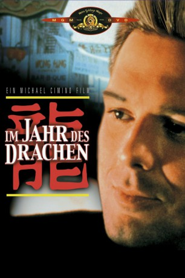

#8778 Im Jahr des Drachen
Alternativ: Year of the Dragon
 
 IMDB-Wertung: 6.9 / 10
IMDB-Wertung: 6.9 / 10  Metascore: 0
Metascore: 0 
Captain Stanley White hat sich die Befriedung von New Yorks Chinatown aufs Panier geschrieben. Durch seine unkonventionellen, oft rabiaten Methoden macht er sich nicht nur in der Unterwelt, sondern auch in den eigenen Reihen zahlreiche Feinde. Trotzdem gelingt es ihm, entgegen aller Intrigen und Widerstände (auch privater Natur) einen Keil in die chinesische Unterwelt zu treiben und den aufstrebenden Jungpaten kurz vor der endgültigen Machtübernahme unschädlich zu machen.
Jahr: 1985
Dauer: 134 Minuten
FSK: 16
Land: USA Studio: MGM/UA Entertainment CompanyTonspuren:
Untertitel: Deutsch, Englisch,
Auflösung: 1080p (1920x816) Größe: 10055 MB
Genre: Action, Thriller, Drama, Krimi
Regisseur: Michael Cimino
Drehbuch: Robert Daley
Soundtrack: David Mansfield
Darsteller:
 Mickey Rourke als Stanley White
Mickey Rourke als Stanley White John Lone als Joey Tai
John Lone als Joey Tai- Ariane als Tracy Tzu
 Raymond J. Barry als Louis Bukowski
Raymond J. Barry als Louis Bukowski- Caroline Kava als Connie White
 Eddie Jones als William McKenna
Eddie Jones als William McKenna Victor Wong als Harry Yung
Victor Wong als Harry Yung Jack Kehler als Alan Perez
Jack Kehler als Alan Perez- Fabia Drake als Nun
 Mei Sheng Fan als White Powder Ma
Mei Sheng Fan als White Powder Ma- Chao-jung Chen als Jade Cobra
 Paul J.Q. Lee als Jackie Wong's Son
Paul J.Q. Lee als Jackie Wong's Son- Manuel Fung als Jackie Wong's Second Son
- Geoff Lee als Shanghai Palace Musician
- Michael Acampora als Funeral Musician
 Espérance Pham Thai Lan als Punk (uncredited)
Espérance Pham Thai Lan als Punk (uncredited)- Leonard Termo als Angelo Rizzo
- Joey Chin als Ronnie Chang
- K. Dock Yip als Milton Bin
- Hon-Lam Pau als Fred Hung
- Way Dong Woo als Elder
- Jimmy Sun als Elder
- Daniel Davin als Francis Kearney
- Mark Hammer als Commissioner Sullivan
 Dennis Dun als Herbert Kwong
Dennis Dun als Herbert Kwong- Steven Chen als Tony Ho
- Paul Scaglione als Teddy Tedesco
- Joseph Bonaventura als Lagnese
- Jilly Rizzo als Schiro
 Tony Lip als Lenny Carranza
Tony Lip als Lenny Carranza- Tisa Chang als Nun
- Gerald Orange als Bear Siku
- Yukio Yamamoto als Ban Sung
- Doreen Chan als Red Hair
- Ha-Lei Yip als Old General
- Dermot A. McNamara als Scappy Peck
- Vallo Benjamin als D.E.A. Man
- Myra Chen als Shanghai Palace Singer
- Feng Chin als Dragon King
- Yuk Fan Yiu als Dragon King
- Richie Hsiu als Dragon King
- Jack Lee als Dragon King
- David Lee als Dragon King
- Irene Jung als Dragon Girl
- Josie Lee als Dragon Girl
- Jiwon Chang als Dragon Girl
- Kelly Wong als Dragon Girl
- Chi Moy als Dragon Girl
- Johnny Shia als Chia
- Gardell Tung als Jade Cobra
Datei: X:\1985\Im Jahr des Drachen (1985, FSK16, 1920x816).mkv seit 30.04.2018
Festplatte: HD 1980-1986
 Es gibt insgesamt 43 Filme in der Gruppe '1985'
Es gibt insgesamt 43 Filme in der Gruppe '1985'